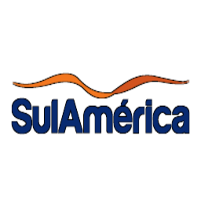

Individual
Amil Odonto IndividualAdesão
Amil Adesão Qualicorp ABRACEM - Profissional Liberal UBE - Estudante ASMPF - Servidor Público UBES - Estudante Secundarista FECONESTE - Empregado do Comércio UNE - Estudante Universitário Os planos mencionados neste material podem ser comercializados no estado de Pernambuco.Guia Adesão - Amil Premium - Normas e Elegibilidade
Amil Guia Adesão Qualicorp ABRACEM - Profissional Liberal UBE - Estudante ASMPF - Servidor Público UBES - Estudante Secundarista FECONESTE - Empregado do Comércio UNE - Estudante Universitário Os planos mencionados neste material podem ser comercializados no estado de Pernambuco.Adesão
Amil Adesão Qualicorp AJUFE - Juiz Federal CRMV-PE - Veterinário ANAMATRA - Magistrado CRN-6 - Nustricionista e Técnico em Nutrição e Dietética CAA-PE - Advogado e Estagiário CRO-PE - CirurgiãoDentista Técnico e Auxiliar COREN-PE - Enfermeiro Técnico e Auxiliar de Enfermagem CRP-2 - Psicólogo CRA-PE - Administradores Administração e Estudante FNA - Arquitetura e Urbanista Arquiteto CRC-PE - Contabilista e Técnico MÚTUA - Engenheiro e Profisisonaldo CREA CREF-12 - Profissional de Educação Física e Estudantes SINDIRECEITA - Servidor Público CREFONO-4 Fonoaudiólogo Os planos mencionados neste material podem ser comercializados no estado de Pernambuco.Guia Adesão - Amil Supremo - Normas e Elegibilidade
Amil Supremo Guia Adesão Qualicorp AJUFE - Juiz Federal CRMV-PE - Veterinário ANAMATRA - Magistrado CRN-6 - Nustricionista e Técnico em Nutrição e Dietética CAA-PE - Advogado e Estagiário CRO-PE - Cirurgião-Dentista Técnico e Auxiliar COREN-PE - Enfermeiro Técnico e Auxiliar de Enfermagem CRP-2 - Psicólogo CRA-PE - Administradores Administração e Estudante FNA - Arquitetura e Urbanista Arquiteto CRC-PE - Contabilista e Técnico MÚTUA - Engenheiro e Profisisonaldo CREA CREF-12 - Profissional de Educação Física e Estudantes SINDIRECEITA - Servidor Público CREFONO-4 Fonoaudiólogo Os planos mencionados neste material podem ser comercializados no estado de Pernambuco.Individual
Bradesco Odonto IndividualAdesão
Bradesco Qualicorp Premium Adesão FECOMÉRCIO-PE - Empregador do Comércio FECONESTE - Empregado do Comércio Os planos mencionados neste material podem ser comercializados no estado de Pernambuco.Guia Adesão - Bradesco Premium - Normas e Elegibilidade
Guia Qualicorp Bradesco Premium Adesão FECOMÉRCIO-PE - Empregador do Comércio FECONESTE - Empregado do Comércio Os planos mencionados neste material podem ser comercializados no estado de Pernambuco.Adesão
Bradesco Qualicorp Supremo Adesão ABADIR - Advogado CORECON-PE - Economista e Estudante AJUFE - Juiz Federal CRA-PE - Administrador AMB - Magistrado CRO-PE - Cirurgião Dentista AMB - Médico FNA - Arquiteto e Urbanista ANAMATRA - Servidor público - Magistrado da Justiça do Trabalho MÚTUA - Engenheiro e Profissional do CREA CAA-PE - Advogados SASPB - Servidor Público CRC-PE - Contador e Técnico Contabilista Os planos mencionados neste material podem ser comercializados no estado de Pernambuco.Guia Adesão - Bradesco Supremo - Normas e Elegibilidade
Guia Qualicorp Bradesco Supremo Adesão ABADIR - Advogado CORECON-PE - Economista e Estudante AJUFE - Juiz Federal CRA-PE - Administrador AMB - Magistrado CRO-PE - Cirurgião Dentista AMB - Médico FNA - Arquiteto e Urbanista ANAMATRA - Servidor público - Magistrado da Justiça do Trabalho MÚTUA - Engenheiro e Profissional do CREA CAA-PE - Advogados SASPB - Servidor Público CRC-PE - Contador e Técnico Contabilista Os planos mencionados neste material podem ser comercializados no estado de Pernambuco.Adesão
Bradesco Qualicorp Supremo Adesão HospitalarABRABDIR - Advogado FNA - Arquiteto e Urbanista AMB - Médico Os planos mencionados neste material podem ser comercializados no estado de Pernambuco.Guia Adesão - Bradesco Supremo Hospitalar - Normas e Elegibilidade
Guia Bradesco Qualicorp Supremo Adesão HospitalarABRABDIR - Advogado FNA - Arquiteto e Urbanista AMB - Médico Os planos mencionados neste material podem ser comercializados no estado de Pernambuco.Individual
Hapvida Odonto IndividualEmpresarial
Hapvida Odonto EmpresarialAdesão
Hapvida Adesão Clube de Saúde ABEVD - Profissional de Venda Direta GASP - Servidor Público ABRACEM - Profissional Liberal UBES - Estudante Secundarista AVAASP - Vendedor Autônomo e Ambulante UNE - Estudante Universitário FNA - Arquiteto e Urbanista Os planos podem ser comercializados nos municípios de Recife Abreu e Lima Cabo de Santo Agostinho Camaragibe Igarassu Itapissuma Joboatão dos Guararapes Moreno Olinda Paulista e São Lourenço da MataGuia Adesão - Hapvida Clube de Saúde - Normas e Elegibilidade
Guia Hapvida Adesão Clube de Saúde ABEVD - Profissional de Venda Direta GASP - Servidor Público ABRACEM - Profissional Liberal UBES - Estudante Secundarista AVAASP - Vendedor Autônomo e Ambulante UNE - Estudante Universitário FNA - Arquiteto e Urbanista Os planos podem ser comercializados nos municípios de Recife Abreu e Lima Cabo de Santo Agostinho Camaragibe Igarassu Itapissuma Joboatão dos Guararapes Moreno Olinda Paulista e São Lourenço da MataAdesão
Hapvida Adesão ASCOMPEAdesão
Hapvida Adesão ASSBRAIndividual
Hapvida Individual DiretoEmpresarial
Hapvida Empresarial Super Simples SuperSimplesEmpresarial
Hapvida Empresarial PMEIndividual
Medvida IndividualEmpresarial
Medvida Empresarial PMEIndividual
 SulAmérica Sulamerica Odonto IndividualAdesão
SulAmérica Sulamerica Qualicorp Adesão UBES - Estudantes Secundaristas Os planos Exato Clássico Especial e Executivo podem ser comercializados nos municípios: Agrestina Alagoinha Altinho Barra de Guabiraba Belo Jardim Bezerros Bonito Brejo da Madre de Deus Cachoeirinha Camocim de São Félix Caruaru Cupira Frei Miguelinho Gravatá Ibirajuba Jataúba Jurema Panelas Pesqueira Poção Riacho das Almas Sairé Sanharó Santa Cruz do Capibaribe Santa Maria do Cambucá São Bento do Una São Caitano São Joaquim do Monte Tacaimbó Taquaritinga do Norte Toritama Vertentes Águas Belas Angelim Bom Conselho Brejão Caetés Calçado Canhotinho Capoeiras Correntes Garanhuns Iati Itaíba Jucati Jupi Lagoa do Ouro Lajedo Palmeirina Paranatama Saloá São João Terezinha Afrânio Cabrobó Dormentes Lagoa Grande Orocó Petrolina Santa Maria da Boa Vista Abreu e Lima Araçoiaba Cabo de Santo Agostinho Camaragibe Chã de Alegria Chã Grande Fernando de Noronha Glória do Goitá Igarassu Ilha de Itamaracá Ipojuca Itapissuma Jaboatão dos Guararapes Moreno Olinda Paulista Pombos Recife São Lourenço da Mata Vitória de Santo Antão Betânia Calumbi Carnaubeira da Penha Flores Floresta Itacuruba Santa Cruz da Baixa Verde São José do Belmonte Serra Talhada Triunfo.Guia Adesão - Premium Hospitalar - Normas e Elegibilidade
SulAmérica Sulamerica Qualicorp Adesão Os planos Exato Clássico Especial e Executivo podem ser comercializados nos municípios: Agrestina Alagoinha Altinho Barra de Guabiraba Belo Jardim Bezerros Bonito Brejo da Madre de Deus Cachoeirinha Camocim de São Félix Caruaru Cupira Frei Miguelinho Gravatá Ibirajuba Jataúba Jurema Panelas Pesqueira Poção Riacho das Almas Sairé Sanharó Santa Cruz do Capibaribe Santa Maria do Cambucá São Bento do Una São Caitano São Joaquim do Monte Tacaimbó Taquaritinga do Norte Toritama Vertentes Águas Belas Angelim Bom Conselho Brejão Caetés Calçado Canhotinho Capoeiras Correntes Garanhuns Iati Itaíba Jucati Jupi Lagoa do Ouro Lajedo Palmeirina Paranatama Saloá São João Terezinha Afrânio Cabrobó Dormentes Lagoa Grande Orocó Petrolina Santa Maria da Boa Vista Abreu e Lima Araçoiaba Cabo de Santo Agostinho Camaragibe Chã de Alegria Chã Grande Fernando de Noronha Glória do Goitá Igarassu Ilha de Itamaracá Ipojuca Itapissuma Jaboatão dos Guararapes Moreno Olinda Paulista Pombos Recife São Lourenço da Mata Vitória de Santo Antão Betânia Calumbi Carnaubeira da Penha Flores Floresta Itacuruba Santa Cruz da Baixa Verde São José do Belmonte Serra Talhada Triunfo.Adesão
SulAmérica Sulamerica Qualicorp Adesão ABRABDIR - Advogado e Bacharel em Direito ADPF - Delegado de Polícia Federal AFB - Fisioterapeuta AJUFE - Juiz Federal AMB - Médico AMN - Marinheiro ANAMATRA - Servidor Público - Magistrado da Justiça do Trabalho ASPROFILI - Profissional Liberal CAA-PE - Advogado COREN-PE - Enfermeiro CRA-PE - Administrador CREFONO-4 - Fonoaudiólogo CRO-PE - Cirurgião-Dentista CRP-2 - Psicólogo FNA - Arquiteto e Urbanista MÚTUA - Engenheiro e Profissional do CREA SASPB - Servidor Público Os planos Exato Clássico Especial e Executivo podem ser comercializados nos municípios: Agrestina Alagoinha Altinho Barra de Guabiraba Belo Jardim Bezerros Bonito Brejo da Madre de Deus Cachoeirinha Camocim de São Félix Caruaru Cupira Frei Miguelinho Gravatá Ibirajuba Jataúba Jurema Panelas Pesqueira Poção Riacho das Almas Sairé Sanharó Santa Cruz do Capibaribe Santa Maria do Cambucá São Bento do Una São Caitano São Joaquim do Monte Tacaimbó Taquaritinga do Norte Toritama Vertentes Águas Belas Angelim Bom Conselho Brejão Caetés Calçado Canhotinho Capoeiras Correntes Garanhuns Iati Itaíba Jucati Jupi Lagoa do Ouro Lajedo Palmeirina Paranatama Saloá São João Terezinha Afrânio Cabrobó Dormentes Lagoa Grande Orocó Petrolina Santa Maria da Boa Vista Abreu e Lima Araçoiaba Cabo de Santo Agostinho Camaragibe Chã de Alegria Chã Grande Fernando de Noronha Glória do Goitá Igarassu Ilha de Itamaracá Ipojuca Itapissuma Jaboatão dos Guararapes Moreno Olinda Paulista Pombos Recife São Lourenço da Mata Vitória de Santo Antão Betânia Calumbi Carnaubeira da Penha Flores Floresta Itacuruba Santa Cruz da Baixa Verde São José do Belmonte Serra Talhada Triunfo.Guia Adesão - Supremo Hospitalar - Normas e Elegibilidade
SulAmérica Sulamerica Qualicorp Adesão Guia ABRABDIR - Advogado e Bacharel em Direito ADPF - Delegado de Polícia Federal AFB - Fisioterapeuta AJUFE - Juiz Federal AMB - Médico AMN - Marinheiro ANAMATRA - Servidor Público - Magistrado da Justiça do Trabalho ASPROFILI - Profissional Liberal CAA-PE - Advogado COREN-PE - Enfermeiro CRA-PE - Administrador CREFONO-4 - Fonoaudiólogo CRO-PE - Cirurgião-Dentista CRP-2 - Psicólogo FNA - Arquiteto e Urbanista MÚTUA - Engenheiro e Profissional do CREA SASPB - Servidor Público Os planos Exato Clássico Especial e Executivo podem ser comercializados nos municípios: Agrestina Alagoinha Altinho Barra de Guabiraba Belo Jardim Bezerros Bonito Brejo da Madre de Deus Cachoeirinha Camocim de São Félix Caruaru Cupira Frei Miguelinho Gravatá Ibirajuba Jataúba Jurema Panelas Pesqueira Poção Riacho das Almas Sairé Sanharó Santa Cruz do Capibaribe Santa Maria do Cambucá São Bento do Una São Caitano São Joaquim do Monte Tacaimbó Taquaritinga do Norte Toritama Vertentes Águas Belas Angelim Bom Conselho Brejão Caetés Calçado Canhotinho Capoeiras Correntes Garanhuns Iati Itaíba Jucati Jupi Lagoa do Ouro Lajedo Palmeirina Paranatama Saloá São João Terezinha Afrânio Cabrobó Dormentes Lagoa Grande Orocó Petrolina Santa Maria da Boa Vista Abreu e Lima Araçoiaba Cabo de Santo Agostinho Camaragibe Chã de Alegria Chã Grande Fernando de Noronha Glória do Goitá Igarassu Ilha de Itamaracá Ipojuca Itapissuma Jaboatão dos Guararapes Moreno Olinda Paulista Pombos Recife São Lourenço da Mata Vitória de Santo Antão Betânia Calumbi Carnaubeira da Penha Flores Floresta Itacuruba Santa Cruz da Baixa Verde São José do Belmonte Serra Talhada Triunfo.Adesão
SulAmérica Sulamerica Qualicorp Adesão ABRABDIR - Advogado e Bacharel em Direito ACRESP - Servidor Público ADPF - Delegado de Polícia Federal AFB - Fisioterapeuta AJUFE - Juiz Federal AMB - Médico AMN - Marinheiro ANADEF - Defensor Público ANAMATRA - Servidor Público - Magistrado da Justiça do Trabalho ANPR - Procurador da República ANPT - Procurador do Trabalho CAA-PE - Advogado COREN-PE - Enfermeiro CRA-PE - Administrador CREF-12 - Profissional de Educação Física CREFONO-4 - Fonoaudiólogo CRMV-PE - Veterinário CRN-6 - Nutricionista CRO-PE - Cirurgião-Dentista CRP-2 - Psicólogo MÚTUA - Engenheiro e Profissional do CREA SASPB - Servidor Público SINDIRECEITA - Analista Tributário Os planos Exato Clássico Especial e Executivo podem ser comercializados nos municípios: Agrestina Alagoinha Altinho Barra de Guabiraba Belo Jardim Bezerros Bonito Brejo da Madre de Deus Cachoeirinha Camocim de São Félix Caruaru Cupira Frei Miguelinho Gravatá Ibirajuba Jataúba Jurema Panelas Pesqueira Poção Riacho das Almas Sairé Sanharó Santa Cruz do Capibaribe Santa Maria do Cambucá São Bento do Una São Caitano São Joaquim do Monte Tacaimbó Taquaritinga do Norte Toritama Vertentes Águas Belas Angelim Bom Conselho Brejão Caetés Calçado Canhotinho Capoeiras Correntes Garanhuns Iati Itaíba Jucati Jupi Lagoa do Ouro Lajedo Palmeirina Paranatama Saloá São João Terezinha Afrânio Cabrobó Dormentes Lagoa Grande Orocó Petrolina Santa Maria da Boa Vista Abreu e Lima Araçoiaba Cabo de Santo Agostinho Camaragibe Chã de Alegria Chã Grande Fernando de Noronha Glória do Goitá Igarassu Ilha de Itamaracá Ipojuca Itapissuma Jaboatão dos Guararapes Moreno Olinda Paulista Pombos Recife São Lourenço da Mata Vitória de Santo Antão Betânia Calumbi Carnaubeira da Penha Flores Floresta Itacuruba Santa Cruz da Baixa Verde São José do Belmonte Serra Talhada Triunfo. - Os planos Direto REC II Adesão Trad.16 F AHO QC Direto REC II Adesão Trad.16 F AHO QP Direto REC II Adesão Trad.16 F AHO QC COP e Direto REC II Adesão Trad.16 F AHO QP COP podem ser comercializados nos municípios de Abreu e Lima Cabo de Santo Agostinho Camaragibe Igarassu Jaboatão dos Guararapes Olinda Paulista Recife São Lourenço da Mata.Adesão
SulAmérica Sulamerica Qualicorp Adesão FECOMÉRCIO-PE - Empregador do Comércio FECONESTE - Empregado do Comércio UBES - Estudante Secundarista Os planos Exato Clássico Especial e Executivo podem ser comercializados nos municípios: Agrestina Alagoinha Altinho Barra de Guabiraba Belo Jardim Bezerros Bonito Brejo da Madre de Deus Cachoeirinha Camocim de São Félix Caruaru Cupira Frei Miguelinho Gravatá Ibirajuba Jataúba Jurema Panelas Pesqueira Poção Riacho das Almas Sairé Sanharó Santa Cruz do Capibaribe Santa Maria do Cambucá São Bento do Una São Caitano São Joaquim do Monte Tacaimbó Taquaritinga do Norte Toritama Vertentes Águas Belas Angelim Bom Conselho Brejão Caetés Calçado Canhotinho Capoeiras Correntes Garanhuns Iati Itaíba Jucati Jupi Lagoa do Ouro Lajedo Palmeirina Paranatama Saloá São João Terezinha Afrânio Cabrobó Dormentes Lagoa Grande Orocó Petrolina Santa Maria da Boa Vista Abreu e Lima Araçoiaba Cabo de Santo Agostinho Camaragibe Chã de Alegria Chã Grande Fernando de Noronha Glória do Goitá Igarassu Ilha de Itamaracá Ipojuca Itapissuma Jaboatão dos Guararapes Moreno Olinda Paulista Pombos Recife São Lourenço da Mata Vitória de Santo Antão Betânia Calumbi Carnaubeira da Penha Flores Floresta Itacuruba Santa Cruz da Baixa Verde São José do Belmonte Serra Talhada Triunfo. - Os planos Direto REC II Adesão Trad.16 A AHO QC COP e Direto REC II Adesão Trad.16 A AHO QP COP podem ser comercializados nos municípios de Abreu e Lima Cabo de Santo Agostinho Camaragibe Igarassu Jaboatão dos Guararapes Olinda Paulista Recife São Lourenço da Mata.Guia Adesão - SulAmérica Premium - Normas e Elegibilidade
Guia SulAmérica Sulamerica Qualicorp Adesão FECOMÉRCIO-PE - Empregador do Comércio FECONESTE - Empregado do Comércio UBES - Estudante Secundarista Os planos Exato Clássico Especial e Executivo podem ser comercializados nos municípios: Agrestina Alagoinha Altinho Barra de Guabiraba Belo Jardim Bezerros Bonito Brejo da Madre de Deus Cachoeirinha Camocim de São Félix Caruaru Cupira Frei Miguelinho Gravatá Ibirajuba Jataúba Jurema Panelas Pesqueira Poção Riacho das Almas Sairé Sanharó Santa Cruz do Capibaribe Santa Maria do Cambucá São Bento do Una São Caitano São Joaquim do Monte Tacaimbó Taquaritinga do Norte Toritama Vertentes Águas Belas Angelim Bom Conselho Brejão Caetés Calçado Canhotinho Capoeiras Correntes Garanhuns Iati Itaíba Jucati Jupi Lagoa do Ouro Lajedo Palmeirina Paranatama Saloá São João Terezinha Afrânio Cabrobó Dormentes Lagoa Grande Orocó Petrolina Santa Maria da Boa Vista Abreu e Lima Araçoiaba Cabo de Santo Agostinho Camaragibe Chã de Alegria Chã Grande Fernando de Noronha Glória do Goitá Igarassu Ilha de Itamaracá Ipojuca Itapissuma Jaboatão dos Guararapes Moreno Olinda Paulista Pombos Recife São Lourenço da Mata Vitória de Santo Antão Betânia Calumbi Carnaubeira da Penha Flores Floresta Itacuruba Santa Cruz da Baixa Verde São José do Belmonte Serra Talhada Triunfo. - Os planos Direto REC II Adesão Trad.16 A AHO QC COP e Direto REC II Adesão Trad.16 A AHO QP COP podem ser comercializados nos municípios de Abreu e Lima Cabo de Santo Agostinho Camaragibe Igarassu Jaboatão dos Guararapes Olinda Paulista Recife São Lourenço da Mata.Adesão
Unimed Allcare AdesãoGuia Adesão - Unimed - Normas e Elegibilidade
Guia Unimed Allcare AdesãoEmpresarial
Unimed Empresarial PME